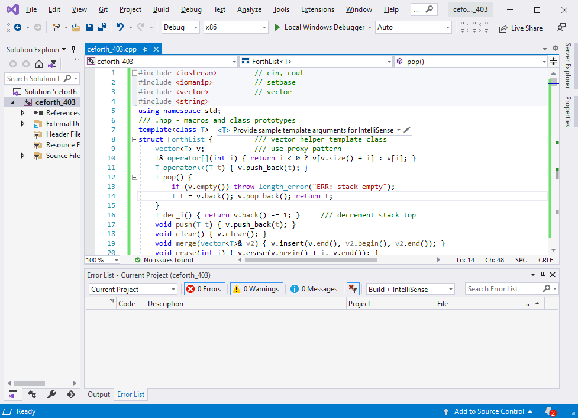
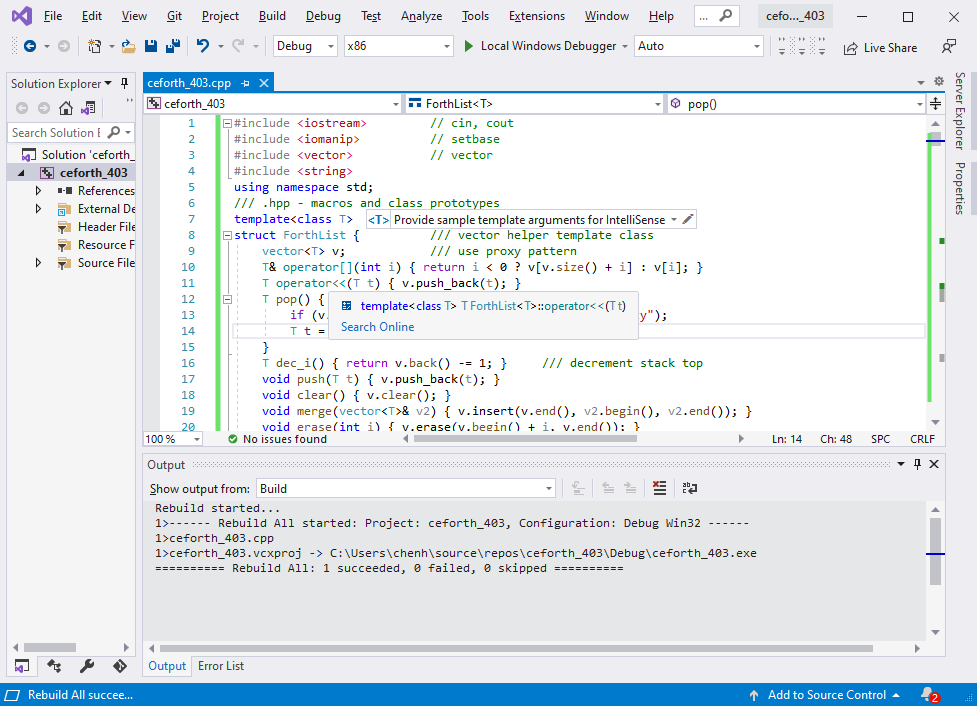
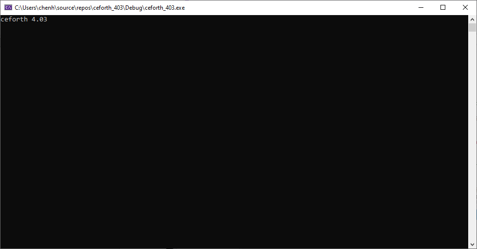
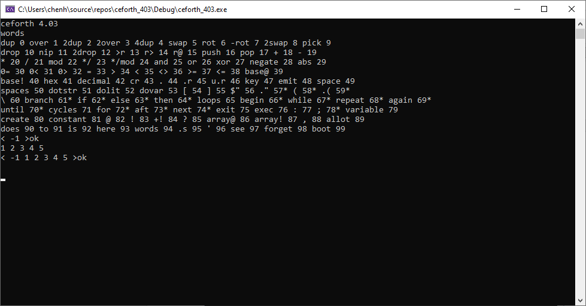
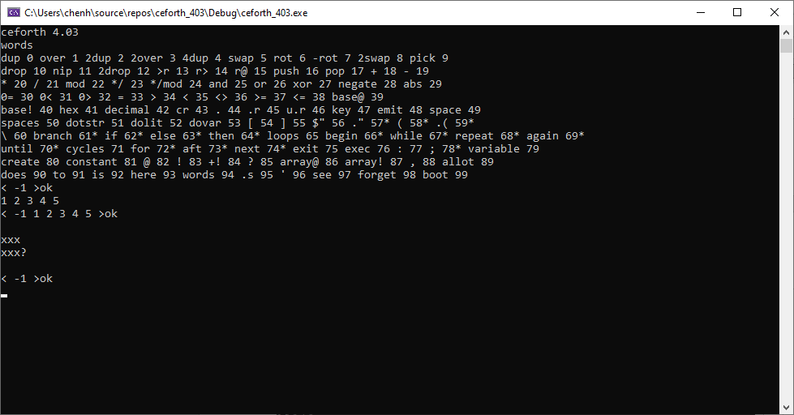
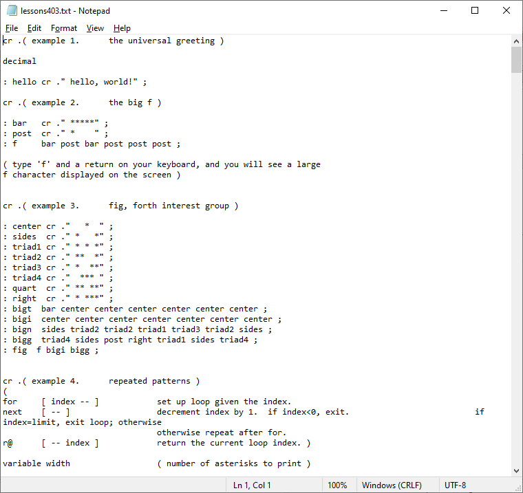
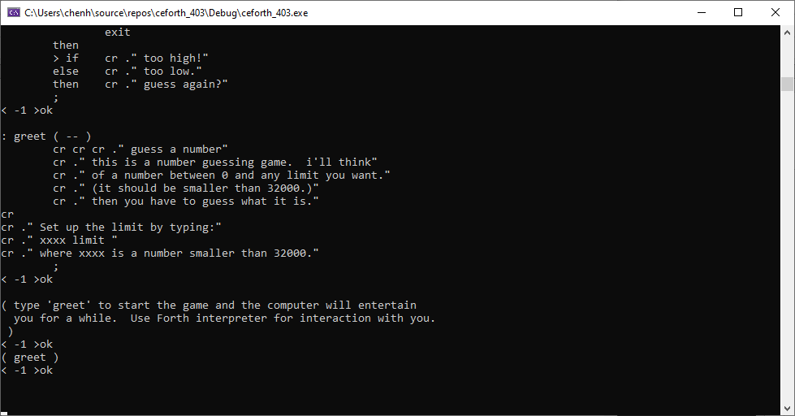
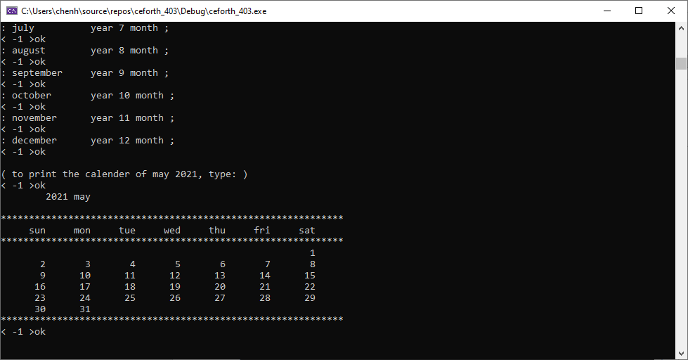
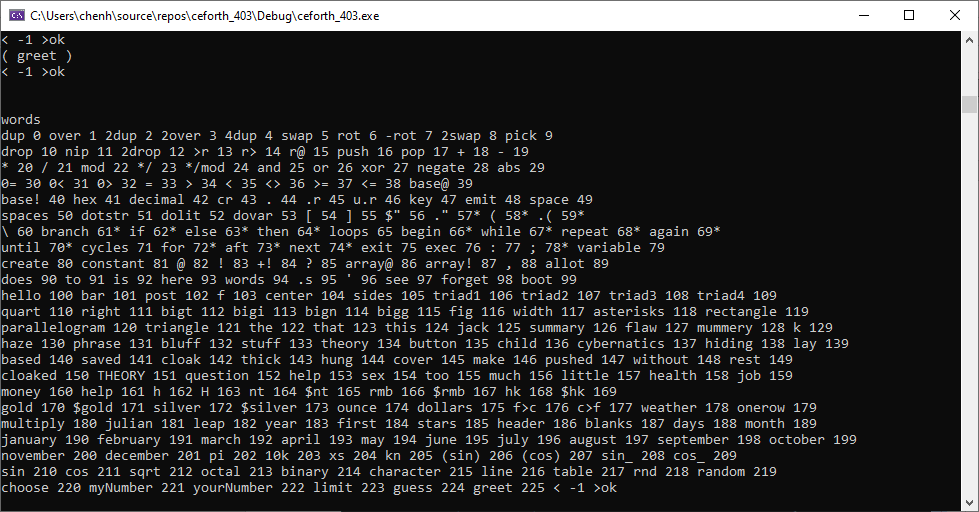
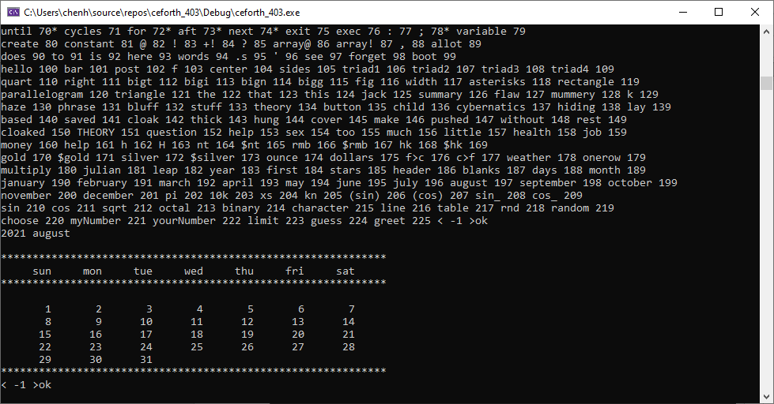

ceforth_403, an eForth in C++
Chochain Lee, and Chen-Hanson Ting.
Chapter 1. How to Write Forth in C
Early Attemps
In 1990, when Bill Muench and I developed eForth Model for microcontrollers. Memory was scarce and the only way to implement eForth was assembly. At that time, there were several Forth systems written in C, the most notable ones were Wil Baden’s thisForth, and Mitch Bradley’s Forthmacs. However, these two implementations were targeted to large computers, base on Unix. I studied them, but could not understand them in their convoluted make processes. I did not have sufficient knowledge on C and Unix to build eForth from scratch.
In Silicon Valley Forth Interest Group, we intermittently had long discussions on how to write Forth in C. John Harbold, also an expert C programmer, assured me that it was possible to write Forth in C, and showed me code on how to do it. But, they were way above my head.
In 2009, I started to think seriously on my problems with C, and problems in writing Forth in C. I realized that a Virtual Forth Machine (VFM) could be written easily in C, just like in any other assembly language. VFM was simply a set of Forth primitive words, very simple to write in assembly of a particular microcontroller, or in C, which was designed for an idealized, general purpose CPU, to emulate algebra. My problems were in the construction of a Forth dictionary. Forth dictionary is a linked list of Forth words, in the form of records. Each record has 4 fields, a fixed length link field, a variable length name field, a fixed length code field, and a variable length parameter field. The elementary C compiler, as I understood, did not have data constructs for building and linking of these records. You needed the convoluted ways in thisForth and Forthmac to build and link these records.
Chuck Moore showed me how to write assembler and how to build the dictionary in MuP21, in a metacompiler. I had used his metacompiler to build eForth systems for P8, P24, eP16 and eP32 chips. A Forth metacompiler was much more powerful than any macro assembler, and C. All I had to do was to allocate a huge data array, and built the dictionary with all the records. This data array could then be copied into VFM code in an assembly file, or in a C header file. If I defined VFM with a set of byte code as its pseudo instructions, the dictionary would contain only data and no executable C code. The beauty in byte code was that it completely isolated the Forth system from the underlying microcontroller, and the Forth system could be ported to any microcontroller with a C compiler.
In a direct threaded Forth model, a record of primitive word contains only byte code. A colon word has one cell of byte code in its code field, and a token list in its parameter field. Tokens are code field address of other words.
Embedding Forth dictionary into a data array fit nicely with the fundamental programming model of C, in that executable C code are compiled into code segments, and data and variables are compiled into data segments. C compiler does not allow executing code in data segments, and considers writing code or data into code segments illegal. Forth as an interpretive language, does not distinguish code from data, and encourages user to add new code into its dictionary. I made the compromise to put all VFM code in a code segment, and all Forth words in a data segment. I accept the limitation that no new instructions will be added to the baseline VFM, while new colon words can be added to the Forth dictionary freely.
The design of a Forth system can now be separated into two independent tasks: building a VFM machine targeting various microcontrollers, including C, and building a Forth dictionary. You could use independent tools which were best suited for the particular task. I chose F# to build the Forth dictionary, because I had used it for years.
In 2009, I wrote two versions of eForth in C: ceForth 1.0 with 64 primitives, and ceForth 1.1 with 32 primitives. They were compiled by gcc under cygwin. I did them for my own ego, just to show that I could. I did not expect they could be used for any practical purpose.
Arduino Uno Kit
In 2011, I was attracted to Arduino Uno Kit and ported eForth to it as 328eForth. One of the problems with this implementation was that it was not compatible with the prevailing Arduino IDE tool chain. I needed to add new Forth words to the dictionary in flash memory. Under Arduino, you were not allowed to write to flash memory at run time. To get the privilege of writing to flash memory, I had to take over the bootload section which was monopolized by Arduino IDE to write to flash memory.
To accommodate Arduino, I ported ceForth 1.1 to Arduino Uno in the form of a sketch, ceForth_328.cpp, which was essentially a C program. Observing the restriction that I could not write anything into flash memory, I extended Forth dictionary in the RAM memory. It worked. However, you had only 1.5KB of RAM memory left over for new Forth words, and you could not save these new words before you lost power. As I stated then, it was only a teaser to entice new people to try Forth on Arduino Uno. For real applications, you had to use 328eForth.
ESP8266
In 2016, a friend, Derek Lai, in the Taiwan FIG group gave me a couple of WiFiBoy Kits he and his son Ricky built. It used an ESP8266 chip with an integrated WiFi radio. I found that a simpler kit NodeMCU with the same chip cost only $3.18 on eBay. It was the cheapest and most powerful microcontroller kit ever, with a 32 bit CPU at 160 MHz, 150 KB of RAM, 4 MB of flash, and many IO devices. On top of all these, it is 802.11 WiFi ready.
The manufacturer of ESP8266, Espressif Systems in Shanghai, China, released a number of Software Development Kits, and left it to the user community to provide software support for this chip. Many engineers took up the challenge and supplied a wide range of programming tools for the community. Espressif later hired a Russian engineer Ivan Grokhotkov to extend Arduino IDE to compile ESP8266 code. This new Arduino IDE extension made it possible for hobbyists like me to experiment with IoT. Large memories in ESP8266 solved the problems I had with ATmega328 on Arduino Uno and made ESP8266 a good host for Forth.
I was pleasantly surprised that ceForth was successfully ported to NodeMCU Kit in a couple of hours. There were only very few changes to fit it into ESP8266, and the Forth dictionary required no change at all. It was all because of the portability in C code. It generally took me two weeks to port Forth to a new microcontroller. Most of this time was wasted in dealing with quirks in a particular assembler, and to impose a VFM on an unyielding CPU architecture. Here C behaved like a sweet universal assembler.
With a Forth written in C on Arduino IDE, I was able to get several NodeMCU Kits to talk to one another over a WiFi network. I still did not understand the Tensilica L106 chip inside ESP8266 at all, and I did not understand WiFi and all its protocols. What I did was to look up library functions I needed to do the few things I had to do. IoT for Dummies!.
It looked that a simple Forth written in C did have values. Therefore, I updated ceForth 1.0 to ceForth 2.3, and hope that people will find some use of it. Several important improvements were implemented, like circular buffers for stacks, and a stream-lined Finite State Machine to run VFM.
It was moved to C++ under Microsoft Visual Studio Community 2017, so that one can compile and test it on a modern Windows PC. espForth for ESP8266 was showcased at the SVFIG booth in 2017 Bay Area Maker Faire.
ESP32forth
Later ESP8266 was upgraded to ESP32, with 3 CPU cores and much bigger RAM memory. Ron Golding in SVFIG decided to use it in his AIR (AI Robot), and I ported espForth to it, and designated it is esp32forth. It was demonstrated in 2019 Bay Area Maker Faire.
Just when I was preparing for the Faire, my wife got a stroke, and I sent her to emergency room. After the Faire she was sent to California Pacific Regional Rehabilitation Center. I went along and set up camp along her hospital bed, forgetting to bring my computer. I proved to her that I could survive without a computer. She had my undivided attention she rightfully deserved. I had lots of time to think about my Forth in C.
I pondered on my beautifully crafted Forth finite state machine:
{primitives[cData[P++]]();}
It read consecutive bytecode and executes them in sequence. If I could read consecutive bytes from a data array, I certainly could write consecutive bytes back into a data array. C did not have built-in variable length arrays, but it did not prevent me from writing variable length records into a big data array.
Two weeks later, my daughter brought my computer to the hospital, and I started to try writing my own data records. I first tried it on Python, which allowed me to write things into a big array and read them back. First I had writeByte(c) to append a byte to an array, and writeInteger(n) to append an integer. From them I define macro functions CODE() to assemble primitive Forth words, COLON() to assemble colon words, and LABEL() to append token lists to colon words. They worked like a macro assembler. Since I had nothing else to do, I built the entire dictionary of esp32forth_54, and compared it byte-for-byte against the header file rom_54.h produced by the Forth metacompiler in esp32forth_54.
After my wife was discharged from the rehab center, I came back to my NodeMCU ESP32S Kit, added the macro assembler to esp32forth, and I got rid of the rom_54.h header file. In this new esp32forth_61 system, everything was in one esp32forth_61.ino file. A single C file contained all the information necessary to bring up a complete Forth system on an ESP32 Kit. However, using labels in token lists to mark target addresses for branching and looping was not satisfactory, because forward references had to be resolved manually. The macro assembler was extended so that control structures could be built in a single pass, with all forward references resolved automatically. This was esp32forth_62.
Subsequently, ceForth_23 was upgraded to ceForth_33 with the new macro assembler. It was very nice that I only have to distribute one file for people to try out a Forth system. It also saved me the trouble of documenting the F# metacompiler, and explaining it to people who are not familiar with Forth. It is silly to explain Forth in Forth. To explain Forth, you had to use some other languages like C, or assembly. This was the intent of the original eForth Model.
jeforth on JavaScript
With the advances in Internet and JavaScript for web page programming, it was interesting to see whether we could get Forth back to the main stage of web programming by hosting it on JavaScript. HTML5 provided a friendly graphic user interface to an underlying Virtual Forth Machine. jeforth is such an implementation. Because of the expressiveness of JavaScript, the Forth Virtual Machine was very simple and it consisted of two small text files: jeforth614.html defining the graphic user interface, and jeforth614.js containing the Forth Virtual Machine. It could run on any modern browser, although I only tested it on Google Chrome.
The kernel of jeforth was developed by Mr. Cheahshen Yap in Taiwan FIG, in 2010. He handed it to Sam Chen to implement the whole eForth system with a few graphic demos. The jeforth kernel was only about 100 lines of JavaScript code. Sam Chen came to SVFIG and presented it in one of our meetings. At the time, I was totally absorbed in designing Forth chips on FPGA, and did not spend enough time to understand jeforth. I did not realize its significance until I was exposed to objects in Python, and felt that we need a web-ready Forth Virtual Machine for netizens.
Brad Nelson enlightened us with a beautiful web page controlling an ESP32 chip running esp32eforth through WiFi. He showed the proper way for a PC to communicate with a WiFi-enabled robot. I did not understand his browser, but appreciated that it controlled the robot prototype through a web page on my PC. I thought that we could use a web page to run a Forth Virtual Machine on PC, in the absence of a robot. The web page could be written in HTML, that called the Forth Virtual Machine programmed in JavaScript. Then I remembered that jeforth was already developed in JavaScript.
I dug up jeforth and this time with Python wrapped in my head for some time, Yap’s Forth objects started to make sense. It was a good place to start learning JavaScript, as I had yet written 0 lines of JavaScript. The most important thing I learned was that Forth words were objects that could be used to build a very simple and very powerful Forth Virtual Machine with very small amount of code.
Yap designed two fields in a Forth object: a name field and a code field, The code field contained a function for a primitive word or a pointer to a token list in a dictionary that was packed with word objects. A primitive Forth word was executed by executing the function in its code field. A colon world was executed by executing a token list in the dictionary, starting at a location stored in the code field.
My thinking was that the Forth word objects should be constructed more uniformly, and they should contain all the information for all their operations. Each word object should contain a name field, a code field, and a parameter field, like those in a traditional Forth word. The link field was not necessary, because all word objects were elements of the dictionary, and could be accessed by a sequential token. The code fields should contain only JavaScript functions. Word objects are executed by running the executable functions in the code fields. Colon words executed an inner interpreter that interpreted a token list stored in the parameter field. Constants, variables and array access their data stored also in the parameter field. As each word object contains all information it requires, there is no need to reference external memory as in Yap’s design.
The end result was jeforth_614, a very tight Forth system with 300 lines of code.
ooeforth on Java
After implementing Forth on JavaScript, I was object-oriented and felt OOP was after all not that bad. Actually, objects greatly simplified the Forth implementation and I was very pleased with jeforth614 which was the smallest and simplest Forth I had ever implemented. That lead me to rethink Java and spent some time learning it. The best way to learn it would be to write a Forth system in it.
Getting deeper into the Java language, I realized that JavaScript was no Java like everybody had said. JavaScript was actually a cScript which makes C language almost interactive. I learned how to make Forth words objects. I read and tried to run several Forth systems written in Java. They were all as complicated as Java itself and I could not understand them, nor could I get them running on my PC. With great help from Shawn Chen and Brad Nelson, I managed to get my Java Forth running. It turned out that Forth even getting simpler than my jeforth614, when Forth words were implemented according to the principles of Object-Oriented Programming.
First Brad helped me write a 4-function calculator with a Forth interpreter. Then Shawn showed me how to write the Forth compiler. Brad and Shawn were using Java techniques too advanced for me, because I had only studied the first 10 Java lessons, and the abstract classes and interfaces were in lesson 15 and beyond. I wrote my objects at the entrance level but got them working, probably not very efficiently. But once I got the Forth interpreter working, all other problems were resolved in due time. We were very proud of our result, and called it ooeforth, Object-Oriented-eForth.
Then, on July 4, 2021, I got an email from Chochain Lee, a former student in Taiwan I had yet to meet. He worked at Intel on Pentium for some years, and then went to do business himself on data warehousing, AI, and management consulting, using most of the languages and tools. I immediately asked him to look at ooeForth, and he kindly made suggestions and greatly improved it. He cleaned up the dictionary and pulled the ugly HashMap out of the Code class. I added the Windows interface with java.awt, giving ooeForth the look-and-feel of jeForth614. It was upgraded to ooeForth204. As Java insisted that the java file and top-class had the same name, with a leading capitalized letter, the java file and class were named accordingly Eforth204. At boot, it signed on and announced “ooeForth 2.04”.
ceforth_403 on C++
In his very first email, Chochain took issue on my statement that C could not build the Forth dictionary. After we finished ooeforth, I asked him to show me how to build the dictionary in C. He gave me a skeletal Forth system in C++ and showed me how to build Forth word objects and the dictionary. I then ported all Forth primitives from ooeforth to ceforth_403. It ran on my Visual Studio 2019 Community. Chochain designed a special vector class which built all the structures we used in ceforth, including stacks, dictionary, and object lists in colon objects. I was very happy to learn that C++ was actually object-oriented. Hopefully we will use this new ceforth to upgrade esp32forth.
The C-Forth Saga
Writing Forth in Java, JavaScipt, and C++ reminded me of an old Chinese folklore. Two quarrelsome flogs lived in a deep well. They heatedly debated how big the sky was. After careful measurements and extensive scientific observation, they finally agreed that the sky was circular, and 5 feet in diameter. That’s my poor view on Object-Oriented Programming.
Chapter 2. Running ceforth_403
Quite some times ago, I was asked the availability of my earlier books and Forth implementations. Paper copies were all gone. Electronic copies I saved on my computer seemed outdated. They all cried out loud asking for new lives, with new formats on newer computers.
My 86eForth 1.0 was the worst. It was compiled by MASM on a PC-DOS computer in 1990. MASM was long discontinued and I had to find better ways to resurrect it. Then I learnt that MASM was still available, but hidden behind C++ in Visual Studio.
ceForth 1.0 and 1.1 were developed with gcc on cygwin. Cygwin was a crippled Linux running on PC, and it was a foreign system to Windows. I had totally forgotten how to compile and run it. Time to move on to Visual Studio.
ceForth 1.0 was upgraded to ceForth_23 on Visual Studio 2017 Community. Then it was upgraded to ceForth_33 on Visual Studio 2019 Community. It was very kind of Microsoft to release it free of charge.
Chochain now brought it up to ceforth_403
Install Visual Studio 2019 Community
ceForth_403.cpp was a Visual Studio C++ Console Application. Visual C++ was a streamlined C compiler running under Windows. To run ceForth, you have to first install Visual Studio IDE. Then you have to copy ceForth_403.cpp to it and get it running. Chochain now brought in real C++ and we got ceforth_403
Download Visual Studio 2019 Community from www.microsoft.com and install it on your PC. Open Visual Studio, and you will see its logo:
ceforth_403
The entire Forth system is implemented in a single file ceforth_403.cpp. Whatever you are accustomed to run C++ applications would work with this file. Create a new console application project with the name cefoth_403 and copy this file into your project. The project should look somewhat like this:

Click Build>Rebuild Solution, and Visual Studio goes to work. After a while, in the Output Panel, it will report a few lines of progress, and end with this message:
===== Rebuild All, 1 succeeded, 0 failed, 0 skipped =====

All is well. Ready to test.
Test ceforth_403
Click Debug>Start without debugging. Wait some more. Finally, you will see a Debug window. On top of it, you will have a console window:

Success! ceForth is running.
Type WORDS, and you get a screen of word names representing a complete ceforth system:
As you can see, there are 100 words implemented in this Forth system. The words are assigned sequential ID’s called tokens, running from 0 to 99. A star after the token indicates that this word is an immediate word, which are executed when a new word is being compiled. These immediate words are used by Forth compiler to build branching and looping structures in a colon word.
Numbers
Forth has an outer interpreter or text interpreter to execute lists of Forth words. When it encounter a “:” (colon) command, the outer interpreter switches to a compiling state and compiles a list of Forth words to an object list, terminated by the next “;” (semicolon) command. The outer interpreter treats numbers in its special ways. It parses out the next character string, or an idiom, from the input buffer and evaluates it. If the idiom is a Forth word, it is executed when interpreting, or compiled when compiling. If the idiom is not a Forth word, the outer interpreter tries to convert it to a number. If the conversion is successful, the number is pushed on a data stack when interpreting, or compiled into the object list as a integer literal object. If the idiom is not a number, the outer interpreter throws up its hands and gives you an error message “?”.
Forth words pass their parameters quietly on the data stack, in the reversed Polish style. Words pop their input parameters from the stack, and push their results back on the stack. As a programmer, you have to manage the data stack correctly, or else. As the stack works in the background, it is very difficult to use it correctly.
My solution in ceforth is to show you the contents of data stack always. Every time the outer interpreter finishes processing a line of code, it displays the contents of the stack before giving you the “ok” prompt. In the last picture you saw the prompt:
< -1 >ok
It shows that there is one number -1 on the stack. It is because we cached the top element of the stack in a register named top, for efficiency in processing the stack elements. The top register is always initialized to -1. If you do not see it, you are in trouble.
Now, type
1 2 3 4 5
and hit the return key. You will see that the stack now has 6 items: -1, 1, 2, 3, 4, and 5, as show in the next picture:

How to clear the stack? You can use the Forth words drop and 2drop. The best way to clear the stack is to type some gibberish word like xxx and hit the return key. The outer interpreter will say “xxx?’, and clear the stack for you, as shown in the next picture:

Lessons403.txt
A text file Lessons403.txt is also distributed with ceforth_403.cpp. It has 17 tutorial lessons for people who are not familiar with the Forth language to learn how to program in Forth. It is also a very good test bed to verify that ceforth_403 works properly.

Open Lessons204.txt with your favorite text editor. Copy the entire file and paste it into the console window. The results are shown in the next picture:

You see only results of the last few tests in the console. You have to scroll up the console to see all earlier test results. Scroll up to see the May 2021 calendar as shown here:

To see all the words compiled from Lessons403.text, type ‘words’ in the console and hit the return key. You will see the complete word list as shown here. The last word greet had a token of 225. We just compiled 126 new words.

The results of Lesson 11 was a calendar for May 2021. Just for fun, you can get the current calendar by typing:
2021 august
and the current calendar is shown:

You can type Forth words into the console and execute them by hitting the return key. Preferably you will write a large program in a text file. Copy the text file into the console and hit the return key to run it.
In the early days of Forth, Chuck Moore did not have operating systems and files to manage his source code. He invented the Virtual Memory system to make use of the disks and tapes to store source code and data. He divided mass storage into blocks as Virtual Memory which could be accessed very conveniently by his Forth systems. Blocks of 1024 byte size became standard features of his Forth systems and most Forth systems following his. However, the block is only one of many ways to supply source code to a Forth system, and is not an integral part of a Forth system.
eForth assumes only one input device supplying a stream of characters to be evaluated. Any way to supply the character stream is acceptable. In a modern PC, simple text files can supply the character stream. Operating systems allow you to manage these files on your PC. You copy the files and feed them to eForth system, which evaluates the character stream.
ceforth is a very good model of a Virtual Forth Machine, which accepts text from an input device, evaluates it, and sends results to an output device. You can type or paste the text into the input device. You can also copy and save the results from the output device to text files. Forth becomes very simple because it does not have to deal with files nor blocks.
Chapter 3. ceforth_403 Source Code
ceforth_403 is a very simple Forth system, with 100 primitive words, or system commands, on boot up. In comparison, its parent eForth, which used to be the simplest Forth system, had 232 words, with 35 primitive words defined for a Forth Virtual Machine. Half of the words in eForth were required to bring up the Forth outer interpreter, and were rarely used by users or applications. ceforth_403 does not need these supporting words, because C++ provides the services used by the Forth outer interpreter.
There are only two types of words in ceforth_403: the primitive words as mentioned above, and colon words defined by you the user. The primitive words execute methods written in C++. A colon word contains a word list. A colon word just gives this list a new name, and performs the tasks specified by this word list.
Both primitive words and colon words are objects in ceforth_403. ceforth_403 has a one-size-fits-all constructor that constructs all the primitive objects and colon objects. This unique design makes ceforth_403 a very simple Forth Virtual Machine, as it takes full advantage of the underlying C++ compiler.
ForthList
In ceforth_403 everything belongs to a list structure. The data stack, return stack, dictionary, and word lists in colon words are list structures. To facilitate manipulating these structures, ceforth_403 uses a ForthList template. To allow lists to grow, ForthList inherits properties from the vector class. A list can grow using push() method, and it can shrink with the pop() method. Elements in a list can be accessed by the [] operator as lists in JavaScript.
#include <iostream> // cin, cout
#include <iomanip> // setbase
#include <vector> // vector
using namespace std;
/// .hpp - macros and class prototypes
template<class T>
struct ForthList { /// vector helper template class
vector<T> v; /// use proxy pattern
T& operator[](int i) { return i < 0 ? v[v.size() + i] : v[i]; }
T operator<<(T t) { v.push_back(t); }
T pop() {
if (v.empty()) throw length_error("ERR: stack empty");
T t = v.back(); v.pop_back(); return t;
}
T dec_i() { return v.back() -= 1; } /// decrement stack top
void push(T t) { v.push_back(t); }
void clear() { v.clear(); }
void merge(vector<T>& v2) { v.insert(v.end(), v2.begin(), v2.end()); }
void erase(int i) { v.erase(v.begin() + i, v.end()); }
};
Class Code
In ceforth_403 all Forth words are objects. All objects are constructed by Class Code. It is a one-size-fit-all class. All special properties needed by various Forth words are included here, and are instantiated when necessary. A set of constructors are used to construct various word objects.
A Forth word is instantiated as an object in the dict[] array. A word object may contain 9 attributes:
A name attribute, with a name string;
A token attribute, with a sequential ID;
An optional attribute pf, with an object list required by a colon object;
An optional attribute pf1, with an object list used by a control structure object;
An optional attribute pf2, with an object list used by a control structure object;
An optional attribute qf, with one or more data values;
An optional attribute literal, with a literal string;
An optional immediate attribute, with a true flag to signify an immediate word.
An optional stage attribute, with an integer determining how a control structure is to be constructed and to be interpreted;
class Code; /// forward declaration
typedef void (*fop)(Code*); /// Forth operator
/// .cpp - Code class implementation
class Code {
public:
static int fence; /// token incremental counter
string name; /// name of word
int token = 0; /// dictionary order token
bool immd = false; /// immediate flag
fop xt = NULL; /// primitive function
string literal; /// string literal
int stage = 0; /// branching stage
ForthList<Code*> pf;
ForthList<Code*> pf1;
ForthList<Code*> pf2;
ForthList<int> qf;
Code(string n, fop fn, bool im = false);/// primitive
Code(string n, bool f = false); /// new colon word or temp
Code(string n, int d); /// dolit
Code(string n, string l); /// dostr
Code* immediate(); /// set immediate flag
Code* addcode(Code* w); /// append colon word
void exec(); /// execute word
string to_s(); /// debugging
};
Forth Virtual Machine
In ceforth_403 a Virtual Forth Machine has a data stack ss, a reurn stack rs, and a dictionary dict, which contains all primitive and colon objects.
A Boolean flag compile specifies whither the outer interpreter in the compiling or interpreting state.
Variable base controls how numbers are interpreted.
The top of data stack is cached in register top.
Variables WP and IP are used by colon object to nest and unnest colon object lists.
/// Forth virtual machine variables
ForthList<int> rs; /// return stack
ForthList<int> ss; /// parameter stack
ForthList<Code*> dict; /// dictionary
bool compile = false; /// compiling flag
int base = 10; /// numeric radix
int top = -1; /// cached top of stack
int IP, WP; /// instruction and parameter pointers
The method find() searches the dictionary for an object whose name matches a string.
/// dictionary and input stream search functions
Code *find(string s) { /// search dictionary reversely
for (int i = dict.v.size() - 1; i >= 0; --i) {
if (s == dict.v[i]->name) return dict.v[i];
}
return NULL;
}
The method next_idiom() parses a string idiom out of the input device. The strings generally separated by spaces or white characters. However, you can specify a different delimiter if you have to.
string next_idiom(char delim=0) { string s; delim ? getline(cin, s, delim) : cin >> s; return s; }
Object Constructors
Here are actual object constructors previewed in Class Code. There are 4 constructors for:
primitive objects,
colon objects,
integer literal objects, and
string literal objects,
respectively.
/// Code class constructors
int Code::fence = 0;
Code::Code(string n, fop fn, bool im) { name = n; token = fence++; xt = fn; immd = im; }
Code::Code(string n, bool f) { Code* c = find(name = n); if (c) xt = c->xt; if (f) token = fence++; }
Code::Code(string n, int d) { xt = find(name = n)->xt; qf.push(d); }
Code::Code(string n, string l) { xt = find(name = n)->xt; literal = l; }
Methods
immediate() switches the boolean falg immd to true for an immediate word object.
addcode() pushes a new object to the object list in the pf property of the current colon object.
/// Code class public methods
Code* Code::immediate() { immd = true; return this; }
Code* Code::addcode(Code* w) { pf.push(w); return this; }
exec() is the inner interpreter of a colon word object. It executes the objects in an object list sequentially. WP points to the current colon word object, and IP points to the object in the object list to be executed. The execution sequence can be terminated by exit() which throws an exception to be caught by the catch branch.
void Code::exec() {
if (xt) { xt(this); return; } /// * execute primitive word and return
rs.push(WP); rs.push(IP); /// * execute colon word
WP = token; IP = 0; /// * setup dolist call frame
for (Code* w : pf.v) { /// * inner interpreter
try { w->exec(); IP++; } /// * pass Code object to xt
catch (...) {}
}
IP = rs.pop(); WP = rs.pop(); /// * return to caller
}
to_s() constructs a text string with the name and the token of a word object.
string Code::to_s() { return name + " " + to_string(token) + (immd ? "*" : ""); }
External Functions
These functions will be invoked by primitive objects, in the places of their lambda functions.
dot_r() prints out a number in a specified column. It will be used by .r and u.r.
// external function (instead of inline)
void dot_r(int n, string s) {
for (int i = 0, m = n-s.size(); i < m; i++) cout << " ";
cout << s;
}
ss_dump() prints out a picture of the data stack with a “>ok” prompt.
void ss_dump() {
cout << "< "; for (int i : ss.v) { cout << i << " "; }
cout << top << " >ok" << endl;
}
see() recursively decompiles an object. Nested colon objects are displayed clearly.
void see(Code* c, int dp) {
auto pf = [](int dp, string s, vector<Code*> v) { // lambda for indentation and recursive dump
int i = dp; cout << endl; while (i--) cout << " "; cout << s;
for (Code* w : v) see(w, dp + 1);
};
auto qf = [](vector<int> v) { cout << "="; for (int i : v) cout << i << " "; };
pf(dp, "[ " + c->to_s(), c->pf.v);
if (c->pf1.v.size() > 0) pf(dp, "1--", c->pf1.v);
if (c->pf2.v.size() > 0) pf(dp, "2--", c->pf2.v);
if (c->qf.v.size() > 0) qf(c->qf.v);
cout << "]";
}
words() displays all words in the dictionary with their tokens. Immediate words are marked with a star.
void words() {
int i = 0;
for (Code* w : dict.v) {
cout << w->to_s() << " ";
if ((++i % 10) == 0) cout << endl;
}
}
Stack Objects
These objects rearrange items on the data stack and return stack. Caching the top item on data stack in the top register greatly simplifies C++ code. Macros PUSH() and POP() further reduce the verbosity in code.
/// macros to reduce verbosity (but harder to single-step debug)
inline int POP() { int n=top; top=ss.pop(); return n; }
#define PUSH(v) (ss.push(top),top=(v))
Macros CODE() and IMMD() construct primitive objects allowing methods to be written as lambda finctions. IMMD() also sets the immd flags for immediate primitive objects.
#define CODE(s, g) new Code(s, [](Code *c){ g; })
#define IMMD(s, g) new Code(s, [](Code *c){ g; }, true)
Now is a good time to construct the Forth dictionary by filling a vector array prim with primitive objects.
/// primitives (mostly use lambda but can use external as well)
vector<Code*> prim = {
dup |
( a -- a a ) Duplicate tos |
over |
( a b -- a b a ) Duplicate 2nd tos item |
2dup |
( a b -- a b a b ) Duplicate top 2 items of tos |
4dup |
( a b c d -- a b c d a b c d ) Duplicate top quad tos items |
swap |
( a b -- b a ) Swap two tos items |
rot |
( a b c -- b c a ) Rotata 3rd tos item to top |
-rot' |
( a b c -- c a b ) Rotate tos to 3rd position |
2swap |
( a b c d -- c d a b ) Swap two pairs of tos items |
2over |
( a b c d -- a b c d a b ) Duplicate second pair tos items |
pick |
( i -- a ) Copy ith tos item to top |
roll |
( i -- a ) Roll ith tos item to top |
drop |
( a -- ) Discard tos |
nip |
( a b -- a ) Discard 2nd tos item |
2drop |
( a b -- ) Discard two tos items |
>r |
( a -- ) Push tos to return stack |
r> |
( -- a ) Pop return stack to tos |
r@ |
( -- a ) Duplicate top of return stack to tos |
push |
( a -- ) Push tos to return stack. Same as >r. |
pop |
( -- a ) "Pop return stack to tos. Same as r>," |
// stack op
CODE("dup", PUSH(top)),
CODE("over", PUSH(ss[-2])),
CODE("2dup", PUSH(ss[-2]); PUSH(ss[-2])),
CODE("2over",PUSH(ss[-4]); PUSH(ss[-4])),
CODE("4dup", PUSH(ss[-4]); PUSH(ss[-4]); PUSH(ss[-4]); PUSH(ss[-4])),
CODE("swap", int n = ss.pop(); PUSH(n)),
CODE("rot", int n = ss.pop(); int m = ss.pop(); ss.push(n); PUSH(m)),
CODE("-rot", int n = ss.pop(); int m = ss.pop(); PUSH(n); PUSH(m)),
CODE("2swap",int n = ss.pop(); int m = ss.pop(); int l = ss.pop(); ss.push(n); PUSH(l); PUSH(m)),
CODE("pick", int i = top; top = ss[-i]),
The return stack is used by ooeForth inner interpreter xt() to save the current word pointer wp and the current instruction pointer ip. Its operations are mostly hidden from you. However, it is a convenient place to save a few parameters on the parameter stack, when it is too crowded. Remember to pop off all the items you pushed on the return stack before a colon word is finished. Leaving things on the return stack is a very easy way to crash ooeForth system.
The for-next looping mechanism also uses the return stack to store the loop index. In a for-next loop, use r@ to get the current loop index.
>r |
( a -- ) Push tos to return stack |
r> |
( -- a ) Pop return stack to tos |
r@ |
( -- a ) Duplicate top of return stack to tos |
push |
( a -- ) Push tos to return stack. Same as >r. |
pop |
( -- a ) "Pop return stack to tos. Same as r>," |
// CODE("roll", int i=top; top=ss[-i]),
CODE("drop", top=ss.pop()),
CODE("nip", ss.pop()),
CODE("2drop",ss.pop(); top=ss.pop()),
CODE(">r", rs.push(POP())),
CODE("r>", PUSH(rs.pop())),
CODE("r@", PUSH(rs[-1])),
CODE("push", rs.push(POP())),
CODE("pop", PUSH(rs.pop())),
ALU Objects
Caching the top of data stack in top register greatly simplified the ALU operations, mostly involving only two items on the top of data stack. ceforth_403 used 32-bit integer numbers exclusively. Logic words and, or, and xor return 32-bit integers after bitwise logic operations.
+ |
( a b -- c ) Add two tos items |
- |
( a b -- c ) Subtract tos from 2nd item |
* |
( a b -- c ) Multiply two tos items |
/ |
( a b -- c ) Divide 2nd item by tos |
mod |
( a b -- c ) Modulus 2nd item by tos |
and |
( a b -- c ) Bitwise AND of two tos items |
or |
( a b -- c ) Bitwise OR of two tos items |
xor |
( a b -- c ) Bitwise XOR of two tos items |
negate |
( a -- b ) Negate tos |
// ALU ops
CODE("+", top += ss.pop()), // note: ss.pop() is different from POP()
CODE("-", top = ss.pop() - top),
CODE("*", top *= ss.pop()),
CODE("/", top = ss.pop() / top),
CODE("mod",top = ss.pop() % top),
CODE("*/", top = ss.pop() * ss.pop() / top),
CODE("*/mod", int n = ss.pop() * ss.pop();
ss.push(n% top); top = (n / top)),
CODE("and",top &= ss.pop()),
CODE("or", top |= ss.pop()),
CODE("xor",top ^= ss.pop()),
CODE("negate", top = -top),
CODE("abs",top = abs(top)),
Comparison objects generally return -1 for true or 0 for false . When a value is used as a flag, a non-zero value acts like a true flag, and 0 acts as a false flag.
// logic ops
CODE("0=", top = (top == 0) ? -1 : 0),
CODE("0<", top = (top < 0) ? -1 : 0),
CODE("0>", top = (top > 0) ? -1 : 0),
CODE("=", top = (ss.pop() == top) ? -1 : 0),
CODE(">", top = (ss.pop() > top) ? -1 : 0),
CODE("<", top = (ss.pop() < top) ? -1 : 0),
CODE("<>", top = (ss.pop() != top) ? -1 : 0),
CODE(">=", top = (ss.pop() >= top) ? -1 : 0),
CODE("<=", top = (ss.pop() <= top) ? -1 : 0),
Number Output
hex and decimal switch number conversion radix to hexadecimal and to decimal, respectively. The radix base is not directly accessible in ooeForth. However, the command base! can change the radix base ranging from 2 to 36. ooeForth inputs and outputs all numbers in current radix.
base@ |
( -- a ) Return current base |
base! |
( a -- ) Make a the current base |
hex |
( -- ) Change to hexadecimal base |
decimal |
( -- ) Change to decimal base |
cr |
( -- ) Display a carriage return |
. |
( a -- ) Display number a on tos |
.r |
( a n -- ) Display a in n columns |
key |
( -- a ) Input an ASCII character |
emit |
( a -- ) Display an ASCII character |
space |
( -- ) Display a space |
spaces |
( n -- ) Display n spaces |
// output
CODE("base@", PUSH(base)),
CODE("base!", cout << setbase(base = POP())),
CODE("hex", cout << setbase(base = 16)),
CODE("decimal",cout << setbase(base = 10)),
CODE("cr", cout << endl),
CODE(".", cout << POP() << " "),
CODE(".r", int n = POP(); string s = to_string(POP()); dot_r(n, s)),
CODE("u.r", int n = POP(); string s = to_string(abs(POP())); dot_r(n, s)),
CODE("key", PUSH(next_idiom()[0])),
CODE("emit", char b = (char)POP(); cout << b),
CODE("space", cout << (" ")),
CODE("spaces", for (int n = POP(), i = 0; i < n; i++) cout << " "),
Literals
Character strings are a very important data type for a program to communicate with you. Error messages, appropriate warnings, and suggestions can be displayed dynamically to help you use the system in a friendly way. Character strings are compiled in the colon words as string objects. A string literal is compiled into a string object whose literal attribute contains the character string. It is similar to an integer literal that is a dolit object and has the integer value stored in its qf attribute. This special ceforth_403 property embedding strings and integers in objects allows you to construct linear object lists in colon words.
This is a good place to mention that an object list only contains objects. We have integer literals and string literals taking care of. Later, we will show you how to take care of control structures, like branching and looping. All control structures are reduced to objects and all object lists in colon words become linear object lists that can be executed easily.
[ |
( -- ) Change to interpreting mode |
] |
( -- ) Change to compiling mode |
' |
( -- w ) Return token of next idiom outside colon idiom. |
(') |
( -- w ) Return token of next idiom inside colon idiom. |
['] |
( -- w ) Return token of next compiled string while compiling. |
dolit |
( -- ) Push next token on stack |
dostr |
( -- w ) Return token of next string |
$" |
( -- w ) Compile next idiom as a string literal |
dotstr |
( -- ) Display next compiled string |
." |
( -- ) Compile next idiom as a string literal for display |
( |
( -- ) Comment to the next ) |
.( |
( -- ) Display next idiom up to next ) |
\ |
( -- ) Comment to the new line |
// literals
CODE("dotstr", cout << c->literal),
CODE("dolit", PUSH(c->qf[0])),
CODE("dovar", PUSH(c->token)),
CODE("[", compile = false),
CODE("]", compile = true),
CODE("$\"",
string s = next_idiom('"').substr(1);
dict[-1]->addcode(new Code("dovar", s))),
IMMD(".\"",
string s = next_idiom('"').substr(1);
dict[-1]->addcode(new Code("dotstr", s))),
IMMD("(", next_idiom(')')),
IMMD(".(", cout << next_idiom(')')),
CODE("\\", cout << next_idiom('\n')),
Control Structures
When the outer interpreter compiles a colon word, it builds a new object list. Chuck Moore invented a very simple mechanism to build control structures in token lists. He designated a set of words that are executed while compiling. These words are called immediate words. These immediate words build control structures by compiling address literals. The addresses in the address literals are resolved correctly in a single pass, using the parameter stack to hold addresses for forward and backward referencing.
In ceforth, we went a step further. Each control structure is compiled to an object! In branching and looping structures, there are different paths of execution. We use the attributes pf, pf1 and pf2 to store object lists to be executed selectively in different paths.
Following are all the alternative object lists used in the control structures:
Conditional branch |
if {pf} then |
|
if {pf} else {pf1} then |
Infinite loop |
begin {pf} again |
Indefinite loop |
begin {pf} until |
|
begin {pf} while {pf1} repeat |
Finite loop |
for {pf} next |
|
for {pf} aft {pf1} then {pf2} next |
We construct three types of objects to take care of all the above control structures:
branch builds an if-then or if-else-then ob ject.
loops builds a begin-until, begin-again, or begin-while-repeat ob ject.
cycles builds a for-next or for-aft-then-next ob ject.
In these control structure objects, they use another attribute struct to decide which path to follow at runtime:
stage=0, execute pf list in if-then, begin-again, or for-next structures.
stage=1, execute pf in begin-until structure.
stage=2, execute pf or pf1 list in if-else-then or begin-while-repeat structure.
stage=3, execute pf, pf1 or pf2 list in for-aft-then-next structure.
Branch
branch is an object which has a pf and a pf1 attributes. pf stores a true branch in an if-then or if-else-then object. pf1 stores a false branch in an if-else-then object.
branch |
Object to hold if-then or if-else-then structure |
if |
Instantiate branch object and start compiling pf list. |
else |
Terminate pf list and start compiling pf1 list. |
then |
Terminate pf or pf1 list. |
// branching - if...then, if...else...then
IMMD("branch",
bool f = POP() != 0; // check flag
for (Code* w : (f ? c->pf.v : c->pf1.v)) w->exec()),
IMMD("if",
dict[-1]->addcode(new Code("branch"));
dict.push(new Code("temp"))), // use last cell of dictionay as scratch pad
IMMD("else",
Code *temp = dict[-1]; Code *last = dict[-2]->pf[-1];
last->pf.merge(temp->pf.v);
temp->pf.clear();
last->stage = 1),
IMMD("then",
Code *temp = dict[-1]; Code *last = dict[-2]->pf[-1];
if (last->stage == 0) { // if...then
last->pf.merge(temp->pf.v);
dict.pop();
}
else { // if...else...then, or
last->pf1.merge(temp->pf.v); // for...aft...then...next
if (last->stage == 1) dict.pop();
else temp->pf.clear();
}),
Loops
loops is an object which has a pf and a pf1 attributes. The pf stores a repeating branch in a begin-again, begin-until, or begin-while-repeat object. The pf1 stores a true branch in a begin-while-repeat object.
loops |
Object to hold begin-until,begin-again, or begin-while-repeat structure |
begin |
Instantiate loops object and start compiling pf list. |
again |
Terminate pf list. |
until |
Terminate pf list. |
while |
Terminate pf list and start compiling pf1 list. |
repeat |
Terminate pf1 list. |
// loops - begin...again, begin...f until, begin...f while...repeat
CODE("loops",
while (true) {
for (Code* w : c->pf.v) w->exec(); // begin...
int f = top;
if (c->stage == 0 && (top=ss.pop(), f != 0)) break; // ...until
if (c->stage == 1) continue; // ...again
if (c->stage == 2 && (top=ss.pop(), f == 0)) break; // while...repeat
for (Code* w : c->pf1.v) w->exec();
}),
IMMD("begin",
dict[-1]->addcode(new Code("loops"));
dict.push(new Code("temp"))),
IMMD("while",
Code *last = dict[-2]->pf[-1]; Code *temp = dict[-1];
last->pf.merge(temp->pf.v);
temp->pf.clear(); last->stage = 2),
IMMD("repeat",
Code *last = dict[-2]->pf[-1]; Code *temp = dict[-1];
last->pf1.merge(temp->pf.v); dict.pop()),
IMMD("again",
Code *last = dict[-2]->pf[-1]; Code *temp = dict[-1];
last->pf.merge(temp->pf.v);
last->stage = 1; dict.pop()),
IMMD("until",
Code *last = dict[-2]->pf[-1]; Code *temp = dict[-1];
last->pf.merge(temp->pf.v); dict.pop()),
Cycles
cycles is an object which has a pf , a pf1 and a pf2 attributes. The pf stores a repeating list in a for-next type of object. If the cycles object contains an aft-then clause, the 3 pf attributes are used as:
for {pf} aft {pf1} then {pf2} next
cycles |
Object to hold for-nex or for-aft-then-next structure |
for |
Instantiate cycles object and start compiling pf list. |
next |
Terminate pf or pf2 list. |
aft |
Terminate pf list and start compiling pf1 list. |
// cycles - for...next, for...aft...then...next
CODE("cycles",
do { for (Code* w : c->pf.v) w->exec(); }
while (c->stage == 0 && rs.dec_i() >= 0); // for...next only
while (c->stage > 0) { // aft
for (Code* w : c->pf2.v) w->exec(); // then...next
if (rs.dec_i() < 0) break;
for (Code* w : c->pf1.v) w->exec(); // aft...then
}
rs.pop()),
IMMD("for",
dict[-1]->addcode(new Code(">r"));
dict[-1]->addcode(new Code("cycles"));
dict.push(new Code("temp"))),
IMMD("aft",
Code *last = dict[-2]->pf[-1]; Code *temp = dict[-1];
last->pf.merge(temp->pf.v);
temp->pf.clear(); last->stage = 3),
IMMD("next",
Code *last = dict[-2]->pf[-1]; Code *temp = dict[-1];
if (last->stage == 0) last->pf.merge(temp->pf.v);
else last->pf2.merge(temp->pf.v); dict.pop()),
Defining Words
All Forth words in the boot-up dict are primitive words with only the name attributes and the methods xt. All Forth words you define after boot-up are colon words, with an object list in its attribute pf. Constants, variables, and arrays have their data stored in the qf attribute. Immediate words that compile control structures have a true flag in their immd attribute.
This set of words, ‘:’, constant, variable, and create are defining words. They create new objects and add them to the dictionary.
create does not allocate space in its qf attribute. The command ‘,’ (comma) adds one data value to the qf attribute. The command allot allocates a number of data values in the pf attribute, and initializes them all to 0.
exit |
Unnest an object list by throwing an ArithmeticException. |
exec |
( w -- ) Start executing the colon object at w. |
: |
(colon) ( -- ; <string> ) creates a new colon word object. It takes the following string in the input stream to be the name of the new word. It sets compiling flag to true so that the pf attribute to receive a new object list, |
; |
(semi-colon) ( -- ) clear the compiling flag to false and terminate compiling the current object list. |
create |
( -- ; <string> ) create a new array without allocating memory. Memory is allocated using allot. |
variable |
( -- ; <string> ) create a new variable, and initialize its qf attribute to 0. |
constant |
( n -- ; <string> ) create a new constant, and initialize its qf attribute with the value n. |
@ |
( w – n ) w is the token of a variable. Return the data stored in its qf attribute. |
! |
( n w -- ) stored the data n into the qf attribute of a variable w. |
+! |
( n w -- ) add value n to the qf attribute in the variable w. |
? |
( w -- ) display the contents in the qf attribute of a variable w. |
array@ |
( w i -- ) return the ith object in the qf attribute of an array w defined by create. |
array! |
( n w i -- ) Store data n into the ith object in the qf attribute of an array w defined by create. |
, |
( n -- ) add n to the qf attribute in the newly created object. |
allot |
( n -- ) extends the qf attribute in the newly created object by n integers, and initialize them with the value 0. |
does |
In a create-does structure, start compiling an object list which will interpret the objects created from this custom defining object.. |
// compiler
CODE("exit", exit(0)), // exit interpreter
CODE("exec", int n = top; dict[n]->exec()),
CODE(":",
dict.push(new Code(next_idiom(), true)); // create new word
compile = true),
IMMD(";", compile = false),
CODE("variable",
dict.push(new Code(next_idiom(), true));
Code *last = dict[-1]->addcode(new Code("dovar", 0));
last->pf[0]->token = last->token),
CODE("create",
dict.push(new Code(next_idiom(), true));
Code *last = dict[-1]->addcode(new Code("dovar", 0));
last->pf[0]->token = last->token;
last->pf[0]->qf.pop()),
CODE("constant",
dict.push(new Code(next_idiom(), true));
Code *last = dict[-1]->addcode(new Code("dolit", POP()));
last->pf[0]->token = last->token),
All Forth words are objects containing all information needed for their execution. All colon words have their token list in their pf attributes. All variables and all constants have their values in the qf attributes of their corresponding dovar and docon objects.. An array defined by create has the array values stored in the qf attribute of its dovar object. These array objects are addressed by the array token w and an offset. The Forth memory commands @ and ! can only access the first value in qf attributes. Commands array@ and array! must be used to access other array values.
CODE("@", int n=POP(); PUSH(dict[n]->pf[0]->qf[0])), // w -- n
CODE("!", int n=POP(); dict[n]->pf[0]->qf[0] = POP()), // n w --
CODE("+!",int n=POP(); dict[n]->pf[0]->qf[0] += POP()), // n w --
CODE("?", int n=POP(); cout << dict[n]->pf[0]->qf[0] << " "), // w --
CODE("array@", int a=POP(); PUSH(dict[POP()]->pf[0]->qf[a])), // w a -- n
CODE("array!", int a=POP(); dict[POP()]->pf[0]->qf[a] = POP()), // n w a --
CODE(",", dict[-1]->pf[0]->qf.push(POP())),
CODE("allot", // n --
int n = POP();
for (int i = 0; i < n; i++) dict[-1]->pf[0]->qf.push(0)),
Define a Defining Word
The concept of defining word is a very unique feature of Forth, in that it allows you to define new classes of words that can make specific use of data stored in their data attributes. A new defining word is defined by a create-does construct in a colon word:
: <definingWord>
create <compiler words>
does exit <interpreter words> ;
A defining word is defined just like a regular colon word. It starts with the colon command ‘:’ with a name. Then create (or constant if you use only one data value) creates a new word. The sequences of words in <compiler words> specify how you build the data attribute qf in the new word. The sequences of words <interpreter words> specify how the data in qf attribute are to be interpreted when this new word is later executed. This defining word can be used to create a new class of words that share the same interpreter encoded in <interpreter word> list. You can design your own compiler/interpreter and create a new class of words that solves your problem most efficiently.
An exit command after does is required to stop the compiler to run over the <interpreter words> list while compiling a new word of this type. The <interpreter words> list will be interpreted when the new word thus defined is executed.
CODE("does", dict[-1]->pf.merge(dict[WP]->pf.v)),
Attributes in object can be changed dynamically like values in a variable and data items in an array object. Here we have a ‘to object to change the value of a variable, and a ‘is’ object to change the behavior of a colon object:
Constants are simple to use. You give its name, and it returns its value on the stack. Variables are more flexible. They return their token, and you use @ to get its current value. You use ! to change its value. It would be nice if we can change the value of a constant. You can do it in ceforth. You first find the token of a constant by the tick (‘) command. With its token you can store a new value with the ! command. It works well in the interpreting mode. In the compiling mode, use to to change the value of a constant immediately after to.
A colon word has an object list in its pf attribute. An object list can be easily changed to another object list in another colon word. This is generally called vectored execution in Forth parlance. The command is does exactly that. is requires the token of a source colon word and a following target colon word. After is is executed, the target colon word gets the object list of the source colon word, and behaves exactly like the source colon word.
to |
( n -- ) Change the value of the following constant to n. The constant will return n afterwards. |
is |
( w1 w2 -- ) Copy the token list in the pf attribute of w1 to the pf attribute of w2. Make w2 behave like w1. |
‘to’ object allows you to change the value of a constant at compile time. Constants can now be used like variables, but without the extra step of @/.
CODE("to", // n -- , compile only
IP++; // current colon word
dict[WP]->pf[IP++]->pf[0]->qf.push(POP())), // next constant
‘is’ object allows you the change the behavior of a colon object dynamically. To use it, you have to use the “’” (tick) object to find the source colon object. You can stuff its pf attribte to a target colon object. The command sequence is”
‘ source-object is target-object
After that, the target object works exactly like the source object. This is called vectored execution.
CODE("is", // w -- , execute only
Code *source = dict[POP()]; // source word
Code *w = find(next_idiom());
if (w == NULL) throw length_error(" ");
dict[w->token]->pf = source->pf),
Tools
A set of tool words are defined to make it easier for you to write Forth words in ooeForth and to debug them. All Forth words are now objects. These tool words help you to get important information about word objects.
The colon word decompiler see is also interesting. As mention before, an object list in a colon word contains other objects. The decompiler see simply looks up each object in an object list and display its name. Very simple. Chochain made it even more powerful by recursively dive into nested object lists and decompile them all. Try it to see for yourself.
here |
Display the index of the last word in the dictionary. |
words |
Display names of all words in the dictionary from the newest to the oldest. |
.s |
Display all items on the data stack. |
‘ |
Find the object of the following name.. |
see |
Look up the following word in the dictionary and decompile it. |
forget |
Search the following word in the dictionary. Delete it and all words defined after it. The system words at boot time are protected and cannot be removed. |
boot |
Delete all user defined words. |
// tools
CODE("here", PUSH(dict[-1]->token)),
CODE("words", words()),
CODE(".s", ss_dump()),
CODE("'", Code *w = find(next_idiom()); PUSH(w->token)),
CODE("see",
Code *w = find(next_idiom());
if (w) see(w, 0); cout << endl),
CODE("forget",
Code *w = find(next_idiom());
if (w == NULL) return;
dict.erase(max(w->token, find("boot")->token))),
CODE("boot", dict.erase(find("boot")->token + 1))
};
Outer Interpreter
The outer interpreter is actually Forth itself. The body of code in the original eForth model was to build this outer interpreter. In ceforth_403, using services provided by the C++ compiler, the outer interpreter becomes very simple.
The outer interpreter outer() repeatedly parse out an idiom from the input stream cin and then evaluate it. Evaluating an idiom involves looking up this idiom in dict. If it is an object, it is executed when not compiling or when the object is immediate, otherwise the object is compiled into the pf attribute in the object currently being compiled.
If the idiom is not an object, it is converted to an integer by stoi(). This integer is compiled as an integer literal object when compiling. When not compiling, the integer is pushed on the parameter stack. If this idiom cannot be converted to a integer, a exception is thrown and the outer interpreter waits for the next idiom from cin.
As C++ has a very efficient parser in cin object. ceforth_403 just calls cin to parse out the next idiom. On the other end, the cout object takes whatever you throw at it and shows them on the console.
/// core functions (use Python indentation to save a few lines)
void outer() {
string idiom;
while (cin >> idiom) {
Code *w = find(idiom); /// * search through dictionary
if (w) { /// * word found?
if (compile && !w->immd) /// * in compile mode?
dict[-1]->addcode(w); /// * add to colon word
else {
try { w->exec(); } /// * execute forth word
catch (exception& e) {
cout << e.what() << endl; }}}
else {
try { /// * try as numeric
int n = stoi(idiom, nullptr, base); /// * convert to integer
if (compile)
dict[-1]->addcode(new Code("dolit", n)); /// * add to current word
else PUSH(n); } /// * add value onto data stack
catch (...) { /// * failed to parse number
cout << idiom << "? " << endl;
ss.clear(); top = -1; compile = false;
getline(cin, idiom, '\n'); }} /// * skip the entire line
if (cin.peek()=='\n' && !compile) ss_dump(); }}/// * dump stack and display ok prompt
In the dict_setup() method, all primitive objects are instantiated by merging the prim array into the dict vector.
Prim array is no longer needed and it is cleared from the heap.
void dict_setup() {
dict.merge(prim); /// * populate dictionary
prim.clear(); } /// * reduce memory footprint
Now, what does the main program main() has to do? All it has to do is call dict_setup() to buit the Forth dictionary and jump to outer(). Folks, that’s it!
/// main program
int main(int ac, char* av[]) {
dict_setup();
cout << "ceforth 4.03" << endl;
outer();
cout << "done!" << endl;
return 0; }
Chapter 4. Lessons403.txt
Lessons204.txt file contains 17 tutorials I distributed with earlier eForth systems. They are also my sanity checks. Most of my problems in implementing a new eForth system surfaced when I ran these lessons on my new target machines. The Eclipse Console window can accept a very large amount of text. Instead of typing each lesson by hand, you can copy a lesson and paste it into the console to execute/compile it. When the whole system is debugged, I simply copy the entire file into the console. Everything will be compiled correctly. If you scroll the console up, you will see the results from many lessons. When you read a lesson, you can just type in the final word in that lesson and verify the results.
Lesson 1 |
Universal 'Hello World' greeting |
Lesson 2 |
Use character '*' to build a big F |
Lesson 3 |
Build more big letters FIG |
Lesson 4 |
Build parallegrams and other patterns |
Lesson 5 |
The theory that jack built, a multi-stanza poem |
Lesson 6 |
Help, use Forth interpreter to carry on dialog |
Lesson 7 |
Money exchange for different currencies |
Lesson 8 |
Temperature conversion |
Lesson 9 |
Weather reporting |
Lesson 10 |
Print a multiplication table |
Lesson 11 |
Print monthly calendars, bases on one year=365.256363 days |
Lesson 12 |
Sines and cosines are JavaScript transcendental functions |
Lesson 13 |
Square root is a JavaScript functions |
Lesson 14 |
Radix for number conversions |
Lesson 15 |
Print an ascii character table |
Lesson 16 |
Random numberis a JavaScript functions |
Lesson 17 |
Guess a number game |
cr .( example 1. the universal greeting )
decimal
: hello cr ." hello, world!" ;
cr .( example 2. the big f )
: bar cr ." *****" ;
: post cr ." * " ;
: f bar post bar post post post ;
( type 'f' and a return on your keyboard, and you will see a large
f character displayed on the screen )
cr .( example 3. fig, forth interest group )
: center cr ." * " ;
: sides cr ." * *" ;
: triad1 cr ." * * *" ;
: triad2 cr ." ** *" ;
: triad3 cr ." * **" ;
: triad4 cr ." *** " ;
: quart cr ." ** **" ;
: right cr ." * ***" ;
: bigt bar center center center center center center ;
: bigi center center center center center center center ;
: bign sides triad2 triad2 triad1 triad3 triad2 sides ;
: bigg triad4 sides post right triad1 sides triad4 ;
: fig f bigi bigg ;
cr .( example 4. repeated patterns )
(
for [ index -- ] set up loop given the index.
next [ -- ] decrement index by 1. if index<0, exit. if index=limit, exit loop; otherwise
otherwise repeat after for.
r@ [ -- index ] return the current loop index. )
variable width ( number of asterisks to print )
: asterisks ( -- , print n asterisks on the screen, n=width )
width @ ( limit=width, initial index=0 )
for ." *" ( print one asterisk at a time )
next ( repeat n times )
;
: rectangle ( height width -- , print a rectangle of asterisks )
width ! ( initialize width to be printed )
for cr
asterisks ( print a line of asterisks )
next
;
: parallelogram ( height width -- )
width !
for cr r@ spaces ( shift the lines to the right )
asterisks ( print one line )
next
;
: triangle ( width -- , print a triangle area with asterisks )
for cr
r@ width ! ( increase width every line )
asterisks ( print one line )
next
;
( try the following instructions: )
3 10 rectangle
5 18 parallelogram
12 triangle
cr .( example 5. the theory that jack built )
( this example shows you how to build a hiararchical structure in forth)
decimal
: the ." the " ;
: that cr ." that " ;
: this cr ." this is " the ;
: jack ." jack builds" ;
: summary ." summary" ;
: flaw ." flaw" ;
: mummery ." mummery" ;
: k ." constant k" ;
: haze ." krudite verbal haze" ;
: phrase ." turn of a plausible phrase" ;
: bluff ." chaotic confusion and bluff" ;
: stuff ." cybernatics and stuff" ;
: theory ." theory " jack ;
: button ." button to start the machine" ;
: child ." space child with brow serene" ;
: cybernatics ." cybernatics and stuff" ;
: hiding cr ." hiding " the flaw ;
: lay that ." lay in " the theory ;
: based cr ." based on " the mummery ;
: saved that ." saved " the summary ;
: cloak cr ." cloaking " k ;
: thick if that else cr ." and " then
." thickened " the haze ;
: hung that ." hung on " the phrase ;
: cover if that ." covered "
else cr ." to cover "
then bluff ;
: make cr ." to make with " the cybernatics ;
: pushed cr ." who pushed " button ;
: without cr ." without confusion, exposing the bluff" ;
: rest ( pause for user interaction )
." . " ( print a period )
10 spaces ( followed by 10 spaces )
( key drop ( wait the user to press a key )
cr cr ;
(
key [ -- char ] wait for a keystroke, and return the
ascii code of the key pressed.
drop [ n -- ] discard the number.
space [ -- ] display a blank.
spaces [ n -- ] display n blanks.
if [ f -- ] if the flag is 0, skip the following
instructions up to else or then. if
flag is not 0, execute the following
instructions up to else and skip to
then.
else [ -- ] skip the following instructions
up to then.
then [ -- ] terminate an if-else-then structure
or an if-then structure.
)
: cloaked cloak saved based hiding lay rest ;
: THEORY
cr this theory rest
this flaw lay rest
this mummery hiding lay rest
this summary based hiding lay rest
this k saved based hiding lay rest
this haze cloaked
this bluff hung 1 thick cloaked
this stuff 1 cover hung 0 thick cloaked
this button make 0 cover hung 0 thick cloaked
this child pushed
cr ." that made with " cybernatics without hung
cr ." and, shredding " the haze cloak
cr ." wrecked " the summary based hiding
cr ." and demolished " the theory rest
;
THEORY
( type theory to start)
cr .( example 6. help )
( how to use forth interpreter to carry on a dialog )
: question
cr cr ." any more problems you want to solve?"
cr ." what kind ( sex, job, money, health ) ?"
cr
;
: help cr
cr ." hello! my name is creating computer."
cr ." hi there!"
cr ." are you enjoying yourself here?"
key 32 or 121 =
cr
if cr ." i am glad to hear that."
else cr ." i am sorry about that."
cr ." maybe we can brighten your visit a bit."
then
cr ." say!"
cr ." i can solved all kinds of problems except those dealing"
cr ." with greece. "
question
;
: sex cr cr ." is your problem too much or too little?"
cr
;
: too ; ( noop for syntax smoothness )
: much cr cr ." you call that a problem?!! i should have that problem."
cr ." if it reall y bothers you, take a cold shower."
question
;
: little
cr cr ." why are you here!"
cr ." you should be in tokyo or new york of amsterdam or"
cr ." some place with some action."
question
;
: health
cr cr ." my advise to you is:"
cr ." 1. take two tablets of aspirin."
cr ." 2. drink plenty of fluids."
cr ." 3. go to bed (along) ."
question
;
: job cr cr ." i can sympathize with you."
cr ." i have to work very long every day with no pay."
cr ." my advise to you, is to open a rental computer store."
question
;
: money
cr cr ." sorry! i am broke too."
cr ." why don't you sell encyclopedias of marry"
cr ." someone rich or stop eating, so you won't "
cr ." need so much money?"
question
;
: help help ;
: h help ;
: H help ;
( type 'help' to start )
cr .( example 7. money exchange )
( the first example we will use to demonstrate how numbers are
used in forth is a money exchange program, which converts money
represented in different currencies. let's start with the
following currency exchange table:
33.55 nt 1 dollar
7.73 hk 1 dollar
9.47 rmb 1 dollar
1 ounce gold 285 dollars
1 ounce silver 4.95 dollars )
decimal
: nt ( nnt -- $ ) 100 3355 */ ;
: $nt ( $ -- nnt ) 3355 100 */ ;
: rmb ( nrmb -- $ ) 100 947 */ ;
: $rmb ( $ -- njmp ) 947 100 */ ;
: hk ( nhk -- $ ) 100 773 */ ;
: $hk ( $ -- $ ) 773 100 */ ;
: gold ( nounce -- $ ) 285 * ;
: $gold ( $ -- nounce ) 285 / ;
: silver ( nounce -- $ ) 495 100 */ ;
: $silver ( $ -- nounce ) 100 495 */ ;
: ounce ( n -- n, a word to improve syntax ) ;
: dollars ( n -- ) . ;
( with this set of money exchange words, we can do some tests:
5 ounce gold .
10 ounce silver .
100 $nt .
20 $rmb .
if you have many different currency bills in your wallet, you
can add then all up in dollars:
1000 nt 500 hk + .s
320 rmb + .s
dollars ( print out total worth in dollars )
cr .( example 8. temperature conversion )
( converting temperature readings between celcius and farenheit
is also an interesting problem. the difference between temperature
conversion and money exchange is that the two temperature scales
have an offset besides the scaling factor. )
: f>c ( nfarenheit -- ncelcius )
32 -
10 18 */
;
: c>f ( ncelcius -- nfarenheit )
18 10 */
32 +
;
( try these commands
90 f>c . shows the temperature in a hot summer day and
0 c>f . shows the temperature in a cold winter night.
in the above examples, we use the following forth arithmatic
operators:
+ [ n1 n2 -- n1+n2 ] add n1 and n2 and leave sum on stack.
- [ n1 n2 -- n1-n2 ] subtract n2 from n1 and leave differrence
on stack.
* [ n1 n2 -- n1*n2 ] multiply n1 and n2 and leave product
on stack.
/ [ n1 n2 -- n1/n2 ] divide n1 by n2 and leave quotient on
stack.
*/ [ n1 n2 n3 -- n1*n2/n3] multiply n1 and n2, divide the product
by n3 and leave quotient on the stack.
.s [ ... -- ... ] show the topmost 4 numbers on stack.
)
cr .( example 9. weather reporting. )
: weather ( nfarenheit -- )
dup 55 <
if ." too cold!" drop
else 85 <
if ." about right."
else ." too hot!"
then
then
;
( you can type the following instructions and get some responses from the
computer:
90 weather too hot!
70 weather about right.
32 weather too cold.
)
cr .( example 10. print the multiplication table )
: onerow ( nrow -- )
cr
dup 3 .r 4 spaces
1 11
for 2dup *
4 .r
1 +
next
2drop ;
: multiply ( -- )
cr cr 7 spaces
1 11
for dup 4 .r 1 +
next drop
1 11
for dup onerow 1 +
next drop cr
;
( type multiply to print the multiplication table )
multiply
cr .( example 11. calendars )
( print weekly calendars for any month in any year. )
decimal
variable julian ( 0 is 1/1/1950, good until 2050 )
variable leap ( 1 for a leap year, 0 otherwise. )
( 1461 constant 4years ( number of days in 4 years )
: year ( year --, compute julian date and leap year )
dup
1949 - 1461 4 */mod ( days since 1/1/1949 )
365 - julian ! ( 0 for 1/1/1950 )
3 = ( modulus 3 for a leap year )
if 1 else 0 then ( leap year )
leap !
2000 = ( 2000 is not a leap year )
if 0 leap ! then
;
: first ( month -- 1st, 1st of a month from jan. 1 )
dup 1 =
if drop 0
else dup 2 =
if drop 31
else dup 3 =
if drop 59 leap @ +
else
4 - 30624 1000 */
90 + leap @ + ( apr. 1 to dec. 1 )
then ( 59/60 for mar. 1 )
then ( 31 for feb. 1 )
then ( 0 for jan. 1 )
;
: stars 60 for 42 emit next ; ( form the boarder )
: header ( -- ) ( print title bar )
cr stars cr
." sun mon tue wed thu fri sat"
cr stars cr ( print weekdays )
;
: blanks ( month -- ) ( skip days not in this month )
first julian @ + ( julian date of 1st of month )
7 mod 8 * spaces ; ( skip colums if not sunday )
: days ( month -- ) ( print days in a month )
dup first ( days of 1st this month )
swap 1 + first ( days of 1st next month )
over - 1 - ( loop to print the days )
1 swap ( first day count -- )
for 2dup + 1 -
julian @ + 7 mod ( which day in the week? )
if else cr then ( start a new line if sunday )
dup 8 u.r ( print day in 8 column field )
1 +
next
2drop ; ( discard 1st day in this month )
: month ( n -- ) ( print a month calendar )
header dup blanks ( print header )
days cr stars cr ; ( print days )
: january year 1 month ;
: february year 2 month ;
: march year 3 month ;
: april year 4 month ;
: may year 5 month ;
: june year 6 month ;
: july year 7 month ;
: august year 8 month ;
: september year 9 month ;
: october year 10 month ;
: november year 11 month ;
: december year 12 month ;
( to print the calender of may 2021, type: )
2021 may
cr .( example 12. sines and cosines )
( sines and cosines of angles are among the most often encountered
transdential functions, useful in drawing circles and many other
different applications. they are usually computed using floating
numbers for accuracy and dynamic range. however, for graphics
applications in digital systems, single integers in the range from
-32768 to 32767 are sufficient for most purposes. we shall
study the computation of sines and cosines using the single
integers.
the value of sine or cosine of an angle lies between -1.0 and +1.0.
we choose to use the integer 10000 in decimal to represent 1.0
in the computation so that the sines and cosines can be represented
with enough precision for most applications. pi is therefore
31416, and 90 degree angle is represented by 15708. angles
are first reduced in to the range from -90 to +90 degrees,
and then converted to radians in the ranges from -15708 to
+15708. from the radians we compute the values of sine and
cosine.
the sines and cosines thus computed are accurate to 1 part in
10000. this algorithm was first published by john bumgarner
in forth dimensions, volume iv, no. 1, p. 7. )
31416 constant pi
10000 constant 10k
variable xs ( square of scaled angle )
: kn ( n1 n2 -- n3, n3=10000-n1*x*x/n2 where x is the angle )
xs @ swap / ( x*x/n2 )
negate 10k */ ( -n1*x*x/n2 )
10k + ( 10000-n1*x*x/n2 )
;
: (sin) ( x -- sine*10k, x in radian*10k )
dup dup 10k */ ( x*x scaled by 10k )
xs ! ( save it in xs )
10k 72 kn ( last term )
42 kn 20 kn 6 kn ( terms 3, 2, and 1 )
10k */ ( times x )
;
: (cos) ( x -- cosine*10k, x in radian*10k )
dup 10k */ xs ! ( compute and save x*x )
10k 56 kn 30 kn 12 kn 2 kn ( serial expansion )
;
: sin_ ( degree -- sine*10k )
pi 180 */ ( convert to radian )
(sin) ( compute sine )
;
: cos_ ( degree -- cosine*10k )
pi 180 */
(cos)
;
: sin ( degree -- sin )
360 mod dup 0< if 360 + then ( mod may be negative )
dup 46 < if sin_ else
dup 136 < if 90 - cos_ else
dup 226 < if 180 - sin_ negate else
dup 316 < if 270 - cos_ negate else
360 - sin_ then then then then ;
: cos 90 + sin ;
( to test the routines, type:
90 sin . 9999
45 sin . 7070
30 sin . 5000
0 sin . 0
90 cos . 0
45 cos . 7071
0 cos . 10000 )
cr .( example 13. square root )
( there are many ways to take the square root of an integer. the
special routine here was first discovered by wil baden. wil
used this routine as a programming challenge while attending
a forml conference in taiwan, 1984.
this algorithm is based on the fact that the square of n+1 is equal
to the sum of the square of n plus 2n+1. you start with an 0 on
the stack and add to it 1, 3, 5, 7, etc., until the sum is greater
than the integer you wished to take the root. that number when
you stopped is the square root.
)
: sqrt ( n -- root )
1600000000 over < ( largest square it can handle)
if drop 40000 exit then ( safety exit )
>r ( save sqaure )
1 1 ( initial square and root )
begin ( set n1 as the limit )
over r@ < ( next square )
while
dup 2 * 1 + ( n*n+2n+1 )
rot + swap
1 + ( n+1 )
repeat
swap drop
r> drop
;
cr .( example 14. radix for number conversions )
decimal
( : decimal 10 base! ; )
( : hex 16 base! ; )
: octal 8 base! ;
: binary 2 base! ;
( try converting numbers among different radices:
decimal 12345 hex .
hex abcd decimal .
decimal 100 binary .
binary 101010101010 decimal .
real programmers impress on novices by carrying a hp calculator
which can convert numbers between decimal and hexadecimal. a
forth computer has this calculator built in, besides other functions.
)
cr .( example 15. ascii character table )
: character ( n -- )
dup emit hex dup 3 .r
octal dup 4 .r
decimal 3 .r
2 spaces
;
: line ( n -- )
cr
5 for dup character
16 +
next
drop ;
: table ( -- )
32
15 for dup line
1 +
next
drop ;
cr .( example 16. random numbers )
( random numbers are often used in computer simulations and computer
games. this random number generator was published in leo brodie's
'starting forth'.
)
variable rnd ( seed )
here rnd ! ( initialize seed )
: random ( -- n, a random number within 0 to 65536 )
rnd @ 31421 * ( rnd*31421 )
6927 + 65535 and ( rnd*31421+6926, mod 65536)
dup rnd ! ( refresh he seed )
;
: choose ( n1 -- n2, a random number within 0 to n1 )
random * ( n1*random to a double product)
65536 / ( discard lower part )
; ( in fact divide by 65536 )
( to test the routine, type
100 choose .
100 choose .
100 choose .
and varify that the results are randomly distributed betweem 0 and
99 . )
cr .( example 17. guess a number )
( example 16 must be loaded.)
variable myNumber
variable yourNumber
: limit ( n -- )
yourNumber !
cr ." Now, type you guess as:"
cr ." xxxx guess"
cr ." where xxxx is your guess."
yourNumber @ choose myNumber !
;
: guess ( n1 -- , allow player to guess, exit when the guess is correct )
myNumber @ 2dup = ( equal? )
if 2drop ( discard both numbers )
cr ." correct!!!"
exit
then
> if cr ." too high!"
else cr ." too low."
then cr ." guess again?"
;
: greet ( -- )
cr cr cr ." guess a number"
cr ." this is a number guessing game. i'll think"
cr ." of a number between 0 and any limit you want."
cr ." (it should be smaller than 32000.)"
cr ." then you have to guess what it is."
cr
cr ." Set up the limit by typing:"
cr ." xxxx limit "
cr ." where xxxx is a number smaller than 32000."
;
( type 'greet' to start the game and the computer will entertain
you for a while. Use Forth interpreter for interaction with you.
)
( greet )
Conclusion
The essence of Forth is the colon word, which replaces a list of Forth words by a new word. The new word can be used with other existing words to build other newer words. The nested lists of words generally provide the most efficient solutions to all computable problems.
How do you build a Real Forth Machine or a Virtual Forth Machine to process lists of words? You must have these components:
An outer interpreter to evaluate (interpret and compile) lists of words in text strings
An inner interpreter to evaluate (execute) compiled word lists
A return stack to run nested compiled word lists
A data stack to pass parameters among nested compiled lists
A dictionary to store primitive words and colon words
A serial IO device to communicate with the user
All other things are optional.
In the early eForth Model, a Virtual Forth Machine was constructed on a CPU, large or small, by implementing 33 primitive words. From these primitive words, an outer interpreter was implemented by adding about 200 colon words. Implementing an eForth virtual machine on a CPU required writing these primitive words. The colon words are portable among all CPU’s. Using this simple design, eForth was ported to many different micro controllers.
When we wanted to move this eForth Model into the modern PC’s, we faced a different set of challenges. First of all we lost the RS232 serial port. We will have to communicate with Forth using GUI. Secondly, we lost the CPU. We are not allowed to talk to the CPU directly. Everything has to be done through the operating system. In return you are provided with tons and tons of services whether you need them or not.
It is not too bad after all. Forth needs a good and smooth GUI anyway. We can also take advantages of the services provided by the operating systems and language compilers. While porting eForth to Java, JavaScript and C++, I was pleasantly surprised by:
All eForth words could be written in these compilers.
The inner interpreter was reduced to one line of code.
The outer interpreter could also be reduced to about 20 lines of code.
The entire eForth system was reduced to about 400 lines of code.
Objects are quite useful and Forth words are objects.
GUI is not that difficult if you limit your scope.
Now we have ceforth_403 on C++, ooeforth204 on Java, and jeforth614 on JavaScript. Got most of the OOP covered. Hope we will get some real work done with these implementations.
Appendix: List of ceForth Words
dup |
( a -- a a ) Duplicate tos |
over |
( a b -- a b a ) Duplicate 2nd tos item |
2dup |
( a b -- a b a b ) Duplicate top 2 items of tos |
swap |
( a b -- b a ) Swap two tos items |
rot |
( a b c -- b c a ) Rotata 3rd tos item to top |
-rot' |
( a b c -- c a b ) Rotate tos to 3rd position |
2swap |
( a b c d -- c d a b ) Swap two pairs of tos items |
2over |
( a b c d -- a b c d a b ) Duplicate second pair tos items |
pick |
( i -- a ) Copy ith tos item to top |
roll |
( i -- a ) Roll ith tos item to top |
drop |
( a -- ) Discard tos |
nip |
( a b -- a ) Discard 2nd tos item |
2drop |
( a b -- ) Discard two tos items |
>r |
( a -- ) Push tos to return stack |
r> |
( -- a ) Pop return stack to tos |
r@ |
( -- a ) Duplicate top of return stack to tos |
push |
( a -- ) Push tos to return stack. Same as >r. |
pop |
( -- a ) "Pop return stack to tos. Same as r>," |
+ |
( a b -- c ) Add two tos items |
- |
( a b -- c ) Subtract tos from 2nd item |
* |
( a b -- c ) Multiply two tos items |
/ |
( a b -- c ) Divide 2nd item by tos |
mod |
( a b -- c ) Modulus 2nd item by tos |
and |
( a b -- c ) Bitwise AND of two tos items |
or |
( a b -- c ) Bitwise OR of two tos items |
xor |
( a b -- c ) Bitwise XOR of two tos items |
negate |
( a -- b ) Negate tos |
0= |
( a -- f ) Return true if a=0 |
0< |
( a -- f ) Return true if a<0 |
0> |
( a -- f ) Return true if a>0 |
= |
( a b -- f ) Return true if a=b |
> |
( a b -- f ) Return true if a>b |
< |
( a b -- f ) Return true if a<b |
<> |
( a b -- f ) Return true if a is not equal to b |
base@ |
( -- a ) Return current base |
base! |
( a -- ) Make a the current base |
hex |
( -- ) Change to hexadecimal base |
decimal |
( -- ) Change to decimal base |
cr |
( -- ) Display a carriage return |
. |
( a -- ) Display number a on tos |
.r |
( a n -- ) Display a in n columns |
emit |
( a -- ) Display an ASCII character |
space |
( -- ) Display a space |
spaces |
( n -- ) Display n spaces |
[ |
( -- ) Change to interpreting mode |
] |
( -- ) Change to compiling mode |
find |
( -- w ) Return token of next synonym |
' |
( -- w ) Return token of next synonym outside colon synonym. |
(') |
( -- w ) Return token of next synonym inside colon synonym. |
['] |
( -- w ) Return token of next compiled string while compiling. |
dolit |
( -- ) Push next token on stack |
dostr |
( -- w ) Return token of next string |
"s""" |
( -- w ) Compile next synonym as a string literal |
dotstr |
( -- ) Display next compiled string |
".""" |
( -- ) Compile next synonym as a string literal for display |
( |
( -- ) Comment to the next ) |
.( |
( -- ) Display next synonym up to next ) |
\ |
( -- ) Comment to the new line |
exit |
( -- ) Unnest a list |
donext |
( -- ) Loop to the following address |
branch |
( -- ) Start a branch object |
loops |
( -- ) Start an indefinite loop object |
cycles |
( -- ) Start an definite loop object |
if |
( f -- ) Skip the next true branch if tos is 0 |
else |
( -- ) Take the next false branch |
then |
( -- ) Terminate an if-else-then branch structure |
begin |
( -- ) Start a begin loop structure |
again |
( -- ) Repeat the begin loop |
until |
( f -- ) Repeat begin loop if tos is 0 |
while |
( f -- ) Skip the following true branch if tos is 0 |
repeat |
( -- ) Repeat begin loop |
for |
( n -- ) Repeat following loop n+1 times |
next |
( -- ) Decrement top of return stack. Exit loop if top of return stack is negative negative. |
aft |
( -- ) Skip loop once for the first time |
: |
( -- ) Define a new colon word |
; |
( -- ) Terminate a colon word |
create |
( -- ) Create a new array |
variable |
( -- ) Create a new variable with initial value of 0 |
constant |
( a -- ) Create a new constant with value a |
"," |
( n -- ) Compile number n to pf attribute of newest word |
@ |
( w -- a ) Return contents of a variable |
! |
( n w -- ) Store n in variable at w |
+! |
( n w -- ) Add n to the variable at w |
? |
( w -- ) Display contents in variable w |
array@ |
( w i -- b ) Return contents of the ith item in array w |
array! |
( n w i -- ) Store n into ith item of array w |
, |
( n -- ) Add n to the current array. |
allot |
( n -- ) Allocate n item to the current array. Init values are 0. |
does |
( -- ) Assign following token list to the new word just created |
here |
( -- w ) Return top of dictionary |
boot |
( -- ) Delete all user defined words |
forget |
( -- ) Delete following words and all words defined after it. |
.s |
( -- ) Display the data stack. |
words |
( -- ) Display names of all words in dictionary |
see |
( -- ) Disassemble the following synonym |
time |
( -- ) Display current time |
is |
( w -- ) Force next word to execute w. interpret only. |
to |
( n -- ) Change the value of next constant token to n. compile only. |